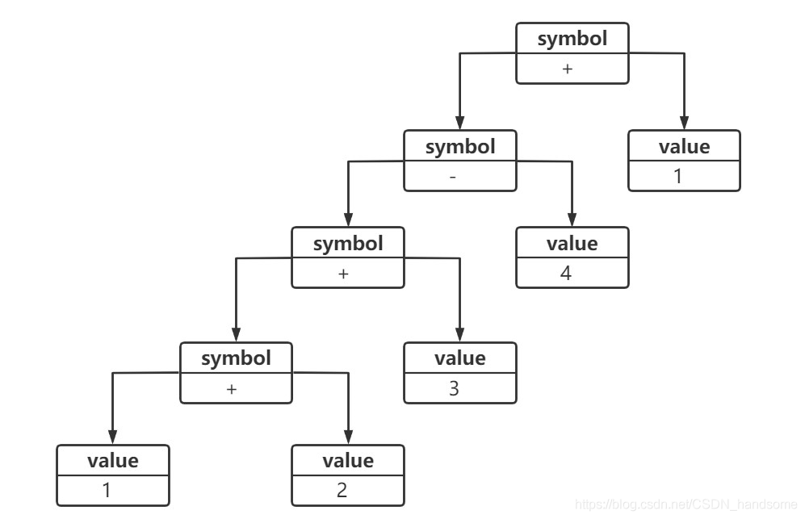

解释器模式
非常冷门的一种设计模式，很少有场景需要这种设计模式
什么是“解释器模式？
- 解释器模式定义: 提供了评估语言的语法或表达式的方式。
特点
- 抽象表达式：主要有一个interpret()操作
- 终结符表达式：R = R1 + R2中，R1 R2就是终结符
- 非终结符表达式：R = R1 - R2中，- 就是非终结符 ， R也是非终结符
模式动机
- 如果在系统中某一特定类型的问题发生的频率很高，此时可以考虑将这些问题的实例表述为一个语言中的句子。再构建一个解释器，解释器通过解释这些句子来解决对应的问题。
- 举个例子，我们希望系统提供一个功能来支持一种新的加减法表达式语言，当输入表达式为 “1 + 2 + 3 - 4 + 1” 字符串时，输出计算结果为 3。
- 为了实现上述功能，需要对输入表达式进行解释，如果不作解释，直接把 “1 + 2 + 3 - 4 + 1” 字符串 丢过去，现有的如 Java、C 之类的编程语言只会把它当作普通的字符串，不可能实现我们想要的计算效果。
- 我们必须自己定义一套规则来实现该语句的解释，即实现一个简单语言来解释这些句子，这就是解释器模式的模式动机。
模式定义
定义语言的文法，并且建立一个解释器来解释该语言中的句子，这里的 “语言” 意思是使用规定格式和语法的代码，它是一种类行为型模式。
模式结构
终结符与非终结符
sum = 1 + 2 +3 - 4 + 1;

- sum 是非终结符
- 1, 2, 3, 4, 1 都是终结符
- +, +, -, + 都是非终结符
每一个具体的语句都可以用类似的抽象语法树来表示，终结符表达式类的实例作为树的叶子节点，而非终结符表达式类的实例作为非叶子节点。抽象语法树描述了如何构成一个复杂的句子，通过对抽象语法树的分析，可以识别出语言中的终结符和非终结符类。
解释器模式